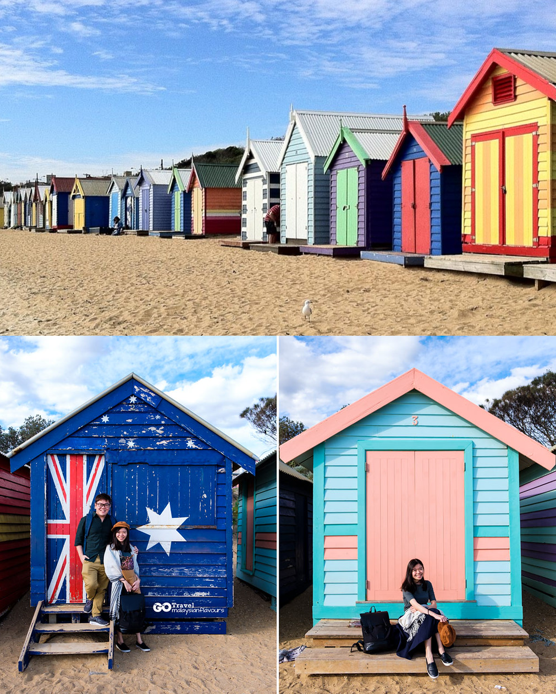
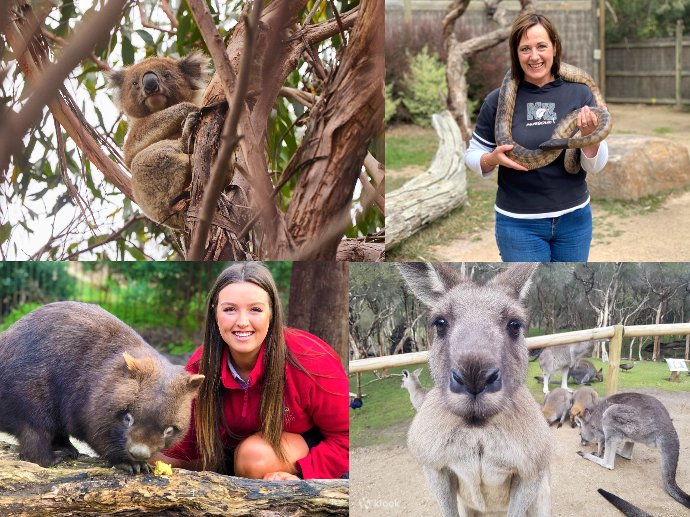
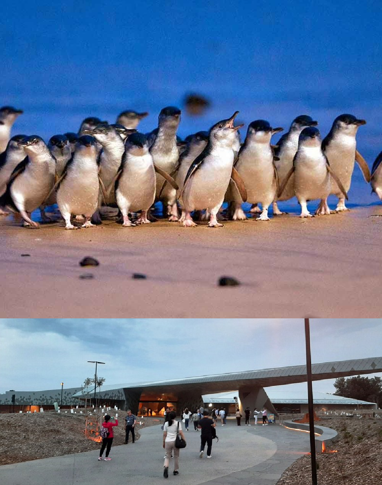

At approximately 9:15 AM, we arrived at Brighton Beach for a short visit. We strolled along the famous Brighton Pier, where the scent of fresh fish and chips hung in the air. Seagulls circled above, and families enjoyed the seaside atmosphere. Though our stay was brief, we managed to dip our toes in the sea and capture a few snapshots of this iconic destination before moving on to our next adventure.
At approximately 1:30 PM, we explored the Moonlit Sanctuary, akin to a zoo, housing fascinating creatures like kangaroos and koala bears. We observed these iconic Australian animals up close. Koalas lounged in the treetops, while kangaroos hopped gracefully about their enclosures. The sanctuary's commitment to wildlife conservation and education was evident in every exhibit. Our visit during the sunny afternoon left us with a deep appreciation for the sanctuary's work, and we left with a desire to return, perhaps under the moonlight, to witness the nocturnal residents in action.
At around 7:35 PM on Phillip Island, we were treated to a magical spectacle—the famous penguin parade. As the sun dipped below the horizon, we watched in awe as Little Penguins emerged from the sea and made their way to their nests. The sight of these adorable creatures waddling up the beach was heartwarming and left us with a deep appreciation for the wonders of nature. Our visit to Phillip Island, even if brief, was a captivating and unforgettable experience.
